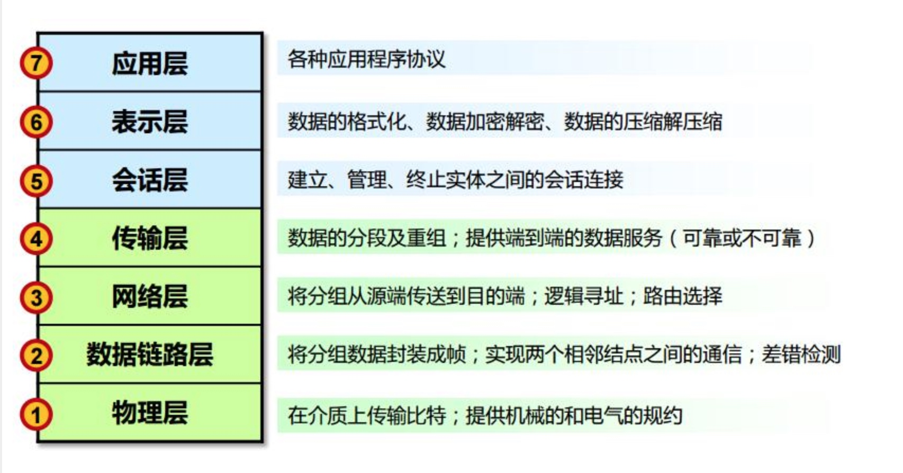
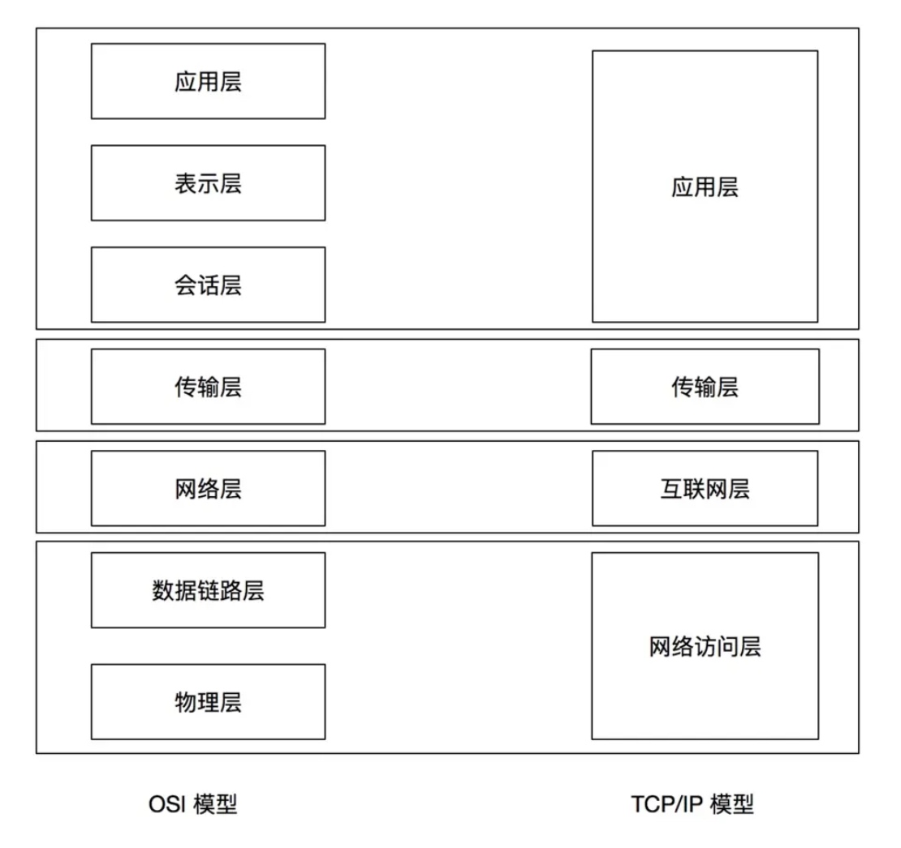
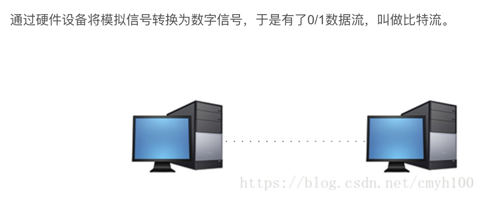
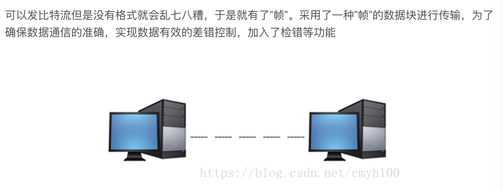
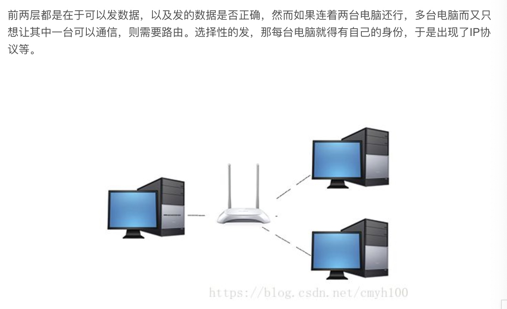
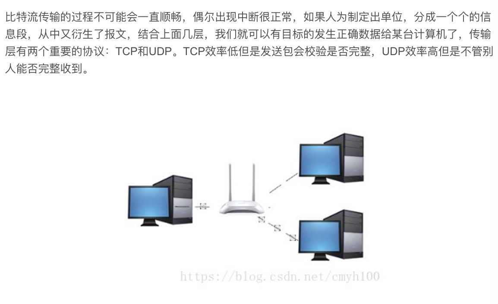

OSI(Open Systerm Interconnect)模型分为 7 层

分层功能职责
- 物理层:底层数据传输,如网线,网卡标准
- 数据链路层: 定义数据的基本格式,如何传输,如何标识,如网卡 MAC 地址
- 网络层:定义 IP 编址,定义路由功能,如不同设备的数据转发
- 传输层:端到端传输数据的基本功能,如 TCP,UDP
- 会话层:控制应用程序之间的会话能力:如不同软件数据分发给不同软件
- 标识层:数据格式标识,基本压缩加密功能
- 应用层:各种应用软件

TCP/IP 模型将 OSI 的 7 层精简为 4 层
TCP/IP 协议中每层技术举例：
网络访问层：ARP、RARP
互联网层：ICMP、IP
传输层：TCP、UDP
应用层：DNS、FTP、HTTP、SMTP、TELNET、IRC、WHOIS
OSI 七层模型通过七个层次化的结构模型使不同的系统不同的网络之间实现可靠的通讯，因此其最主要的功能就是帮助不同类型的主机实现数据传输 。
完成中继功能的节点通常称为中继系统。在OSI七层模型中，处于不同层的中继系统具有不同的名称。
一个设备工作在哪一层，关键看它工作时利用哪一层的数据头部信息。网桥工作时，是以MAC头部来决定转发端口的，因此显然它是数据链路层的设备。
具体说:
物理层：网卡，网线，集线器，中继器，调制解调器
数据链路层：网桥，交换机
网络层：路由器
网关工作在第四层传输层及其以上
集线器是物理层设备,采用广播的形式来传输信息。
交换机就是用来进行报文交换的机器。多为链路层设备(二层交换机)，能够进行地址学习，采用存储转发的形式来交换报文.。
路由器的一个作用是连通不同的网络，另一个作用是选择信息传送的线路。选择通畅快捷的近路，能大大提高通信速度，减轻网络系统通信负荷，节约网络系统资源，提高网络系统畅通率。
交换机和路由器的区别
交换机拥有一条很高带宽的背部总线和内部交换矩阵。交换机的所有的端口都挂接在这条总线上，控制电路收到数据包以后，处理端口会查找内存中的地址对照表以确定目的MAC（网卡的硬件地址）的NIC（网卡）挂接在哪个端口上，通过内部交换矩阵迅速将数据包传送到目的端口，目的MAC若不存在则广播到所有的端口，接收端口回应后交换机会“学习”新的地址，并把它添加入内部MAC地址表中。
使用交换机也可以把网络“分段”，通过对照MAC地址表，交换机只允许必要的网络流量通过交换机。通过交换机的过滤和转发，可以有效的隔离广播风暴，减少误包和错包的出现，避免共享冲突。
交换机在同一时刻可进行多个端口对之间的数据传输。每一端口都可视为独立的网段，连接在其上的网络设备独自享有全部的带宽，无须同其他设备竞争使用。当节点A向节点D发送数据时，节点B可同时向节点C发送数据，而且这两个传输都享有网络的全部带宽，都有着自己的虚拟连接。假使这里使用的是10Mbps的以太网交换机，那么该交换机这时的总流通量就等于2×10Mbps＝20Mbps，而使用10Mbps的共享式HUB时，一个HUB的总流通量也不会超出10Mbps。
总之，交换机是一种基于MAC地址识别，能完成封装转发数据包功能的网络设备。交换机可以“学习”MAC地址，并把其存放在内部地址表中，通过在数据帧的始发者和目标接收者之间建立临时的交换路径，使数据帧直接由源地址到达目的地址。
从过滤网络流量的角度来看，路由器的作用与交换机和网桥非常相似。但是与工作在网络物理层，从物理上划分网段的交换机不同，路由器使用专门的软件协议从逻辑上对整个网络进行划分。例如，一台支持IP协议的路由器可以把网络划分成多个子网段，只有指向特殊IP地址的网络流量才可以通过路由器。对于每一个接收到的数据包，路由器都会重新计算其校验值，并写入新的物理地址。因此，使用路由器转发和过滤数据的速度往往要比只查看数据包物理地址的交换机慢。但是，对于那些结构复杂的网络，使用路由器可以提高网络的整体效率。路由器的另外一个明显优势就是可以自动过滤网络广播。
集线器与路由器在功能上有什么不同?
首先说HUB,也就是集线器。它的作用可以简单的理解为将一些机器连接起来组成一个局域网。而交换机（又名交换式集线器）作用与集线器大体相同。但是两者在性能上有区别：集线器采用的式共享带宽的工作方式，而交换机是独享带宽。这样在机器很多或数据量很大时，两者将会有比较明显的。而路由器与以上两者有明显区别，它的作用在于连接不同的网段并且找到网络中数据传输最合适的路径。路由器是产生于交换机之后，就像交换机产生于集线器之后，所以路由器与交换机也有一定联系，不是完全独立的两种设备。路由器主要克服了交换机不能路由转发数据包的不足。
总的来说，路由器与交换机的主要区别体现在以下几个方面：
（1）工作层次不同
最初的的交换机是工作在数据链路层，而路由器一开始就设计工作在网络层。由于交换机工作在数据链路层，所以它的工作原理比较简单，而路由器工作在网络层，可以得到更多的协议信息，路由器可以做出更加智能的转发决策。
（2）数据转发所依据的对象不同
交换机是利用物理地址或者说MAC地址来确定转发数据的目的地址。而路由器则是利用IP地址来确定数据转发的地址。IP地址是在软件中实现的，描述的是设备所在的网络。MAC地址通常是硬件自带的，由网卡生产商来分配的，而且已经固化到了网卡中去，一般来说是不可更改的。而IP地址则通常由网络管理员或系统自动分配。
（3）传统的交换机只能分割冲突域，不能分割广播域；而路由器可以分割广播域
由交换机连接的网段仍属于同一个广播域，广播数据包会在交换机连接的所有网段上传播，在某些情况下会导致通信拥挤和安全漏洞。连接到路由器上的网段会被分配成不同的广播域，广播数据不会穿过路由器。虽然第三层以上交换机具有VLAN功能，也可以分割广播域，但是各子广播域之间是不能通信交流的，它们之间的交流仍然需要路由器。
（4）路由器提供了防火墙的服务
路由器仅仅转发特定地址的数据包，不传送不支持路由协议的数据包传送和未知目标网络数据包的传送，从而可以防止广播风暴。
物理层

在OSI参考模型中，物理层（Physical Layer）是参考模型的最低层，也是OSI模型的第一层。
物理层的主要功能是：利用传输介质为数据链路层提供物理连接，实现比特流的透明传输。
物理层的作用是实现相邻计算机节点之间比特流的透明传送，尽可能屏蔽掉具体传输介质和物理设备的差异。使其上面的数据链路层不必考虑网络的具体传输介质是什么。“透明传送比特流”表示经实际电路传送后的比特流没有发生变化，对传送的比特流来说，这个电路好像是看不见的。
数据链路层

数据链路层（Data Link Layer）是OSI模型的第二层，负责建立和管理节点间的链路。该层的主要功能是：通过各种控制协议，将有差错的物理信道变为无差错的、能可靠传输数据帧的数据链路。
在计算机网络中由于各种干扰的存在，物理链路是不可靠的。因此，这一层的主要功能是在物理层提供的比特流的基础上，通过差错控制、流量控制方法，使有差错的物理线路变为无差错的数据链路，即提供可靠的通过物理介质传输数据的方法。
该层通常又被分为介质访问控制（MAC）和逻辑链路控制（LLC）两个子层。
MAC子层的主要任务是解决共享型网络中多用户对信道竞争的问题，完成网络介质的访问控制；
LLC子层的主要任务是建立和维护网络连接，执行差错校验、流量控制和链路控制。
数据链路层的具体工作是接收来自物理层的位流形式的数据，并封装成帧，传送到上一层；同样，也将来自上层的数据帧，拆装为位流形式的数据转发到物理层；并且，还负责处理接收端发回的确认帧的信息，以便提供可靠的数据传输。
网络层

网络层（Network Layer）是OSI模型的第三层，它是OSI参考模型中最复杂的一层，也是通信子网的最高一层。它在下两层的基础上向资源子网提供服务。其主要任务是：通过路由选择算法，为报文或分组通过通信子网选择最适当的路径。该层控制数据链路层与传输层之间的信息转发，建立、维持和终止网络的连接。具体地说，数据链路层的数据在这一层被转换为数据包，然后通过路径选择、分段组合、顺序、进/出路由等控制，将信息从一个网络设备传送到另一个网络设备。
一般地，数据链路层是解决同一网络内节点之间的通信，而网络层主要解决不同子网间的通信。例如在广域网之间通信时，必然会遇到路由（即两节点间可能有多条路径）选择问题。
在实现网络层功能时，需要解决的主要问题如下：
寻址：数据链路层中使用的物理地址（如MAC地址）仅解决网络内部的寻址问题。在不同子网之间通信时，为了识别和找到网络中的设备，每一子网中的设备都会被分配一个唯一的地址。由于各子网使用的物理技术可能不同，因此这个地址应当是逻辑地址（如IP地址）。
交换：规定不同的信息交换方式。常见的交换技术有：线路交换技术和存储转发技术，后者又包括报文交换技术和分组交换技术。
路由算法：当源节点和目的节点之间存在多条路径时，本层可以根据路由算法，通过网络为数据分组选择最佳路径，并将信息从最合适的路径由发送端传送到接收端。
连接服务：与数据链路层流量控制不同的是，前者控制的是网络相邻节点间的流量，后者控制的是从源节点到目的节点间的流量。其目的在于防止阻塞，并进行差错检测。
传输层

OSI下3层的主要任务是数据通信，上3层的任务是数据处理。而传输层（Transport Layer）是OSI模型的第4层。因此该层是通信子网和资源子网的接口和桥梁，起到承上启下的作用。
该层的主要任务是：向用户提供可靠的端到端的差错和流量控制，保证报文的正确传输。传输层的作用是向高层屏蔽下层数据通信的细节，即向用户透明地传送报文。该层常见的协议：TCP/IP中的TCP协议、Novell网络中的SPX协议和微软的NetBIOS/NetBEUI协议。
传输层提供会话层和网络层之间的传输服务，这种服务从会话层获得数据，并在必要时，对数据进行分割。然后，传输层将数据传递到网络层，并确保数据能正确无误地传送到网络层。因此，传输层负责提供两节点之间数据的可靠传送，当两节点的联系确定之后，传输层则负责监督工作。综上，传输层的主要功能如下：
传输连接管理：提供建立、维护和拆除传输连接的功能。传输层在网络层的基础上为高层提供“面向连接”和“面向无接连”的两种服务。
处理传输差错：提供可靠的“面向连接”和不太可靠的“面向无连接”的数据传输服务、差错控制和流量控制。在提供“面向连接”服务时，通过这一层传输的数据将由目标设备确认，如果在指定的时间内未收到确认信息，数据将被重发。
监控服务质量。
会话层
会话层（Session Layer）是OSI模型的第5层，是用户应用程序和网络之间的接口，主要任务是：向两个实体的表示层提供建立和使用连接的方法。将不同实体之间的表示层的连接称为会话。因此会话层的任务就是组织和协调两个会话进程之间的通信，并对数据交换进行管理。
用户可以按照半双工、单工和全双工的方式建立会话。当建立会话时，用户必须提供他们想要连接的远程地址。而这些地址与MAC（介质访问控制子层）地址或网络层的逻辑地址不同，它们是为用户专门设计的，更便于用户记忆。域名（DN）就是一种网络上使用的远程地址例如：www.3721.com就是一个域名。会话层的具体功能如下：
会话管理：允许用户在两个实体设备之间建立、维持和终止会话，并支持它们之间的数据交换。例如提供单方向会话或双向同时会话，并管理会话中的发送顺序，以及会话所占用时间的长短。
会话流量控制：提供会话流量控制和交叉会话功能。
寻址：使用远程地址建立会话连接。l
出错控制：从逻辑上讲会话层主要负责数据交换的建立、保持和终止，但实际的工作却是接收来自传输层的数据，并负责纠正错误。会话控制和远程过程调用均属于这一层的功能。但应注意，此层检查的错误不是通信介质的错误，而是磁盘空间、打印机缺纸等类型的高级错误。
表示层
表示层（Presentation Layer）是OSI模型的第六层，它对来自应用层的命令和数据进行解释，对各种语法赋予相应的含义，并按照一定的格式传送给会话层。其主要功能是“处理用户信息的表示问题，如编码、数据格式转换和加密解密”等。表示层的具体功能如下：
数据格式处理：协商和建立数据交换的格式，解决各应用程序之间在数据格式表示上的差异。
数据的编码：处理字符集和数字的转换。例如由于用户程序中的数据类型（整型或实型、有符号或无符号等）、用户标识等都可以有不同的表示方式，因此，在设备之间需要具有在不同字符集或格式之间转换的功能。
压缩和解压缩：为了减少数据的传输量，这一层还负责数据的压缩与恢复。
数据的加密和解密：可以提高网络的安全性。
应用层
应用层（Application Layer）是OSI参考模型的最高层，它是计算机用户，以及各种应用程序和网络之间的接口，其功能是直接向用户提供服务，完成用户希望在网络上完成的各种工作。它在其他6层工作的基础上，负责完成网络中应用程序与网络操作系统之间的联系，建立与结束使用者之间的联系，并完成网络用户提出的各种网络服务及应用所需的监督、管理和服务等各种协议。此外，该层还负责协调各个应用程序间的工作。
应用层为用户提供的服务和协议有：文件服务、目录服务、文件传输服务（FTP）、远程登录服务（Telnet）、电子邮件服务（E-mail）、打印服务、安全服务、网络管理服务、数据库服务等。上述的各种网络服务由该层的不同应用协议和程序完成，不同的网络操作系统之间在功能、界面、实现技术、对硬件的支持、安全可靠性以及具有的各种应用程序接口等各个方面的差异是很大的。应用层的主要功能如下：
用户接口：应用层是用户与网络，以及应用程序与网络间的直接接口，使得用户能够与网络进行交互式联系。
实现各种服务：该层具有的各种应用程序可以完成和实现用户请求的各种服务。
OSI7层模型的小结
由于OSI是一个理想的模型，因此一般网络系统只涉及其中的几层，很少有系统能够具有所有的7层，并完全遵循它的规定。
在7层模型中，每一层都提供一个特殊的网络功能。从网络功能的角度观察：下面4层（物理层、数据链路层、网络层和传输层）主要提供数据传输和交换功能，即以节点到节点之间的通信为主；第4层作为上下两部分的桥梁，是整个网络体系结构中最关键的部分；而上3层（会话层、表示层和应用层）则以提供用户与应用程序之间的信息和数据处理功能为主。简言之，下4层主要完成通信子网的功能，上3层主要完成资源子网的功能。
以下是TCP/IP分层模型
┌────------────┐┌─┬─┬─-┬─┬─-┬─┬─-┬─┬─-┬─┬─-┐
│ ││Ｄ│Ｆ│Ｗ│Ｆ│Ｈ│Ｇ│Ｔ│Ｉ│Ｓ│Ｕ│ │
│ ││Ｎ│Ｉ│Ｈ│Ｔ│Ｔ│Ｏ│Ｅ│Ｒ│Ｍ│Ｓ│其│
│第四层，应用层 ││Ｓ│Ｎ│Ｏ│Ｐ│Ｔ│Ｐ│Ｌ│Ｃ│Ｔ│Ｅ│ │
│ ││ │Ｇ│Ｉ│ │Ｐ│Ｈ│Ｎ│ │Ｐ│Ｎ│ │
│ ││ │Ｅ│Ｓ│ │ │Ｅ│Ｅ│ │ │Ｅ│它│
│ ││ │Ｒ│ │ │ │Ｒ│Ｔ│ │ │Ｔ│ │
└───────------─┘└─┴─┴─-┴─┴─-┴─┴─-┴─┴─-┴─┴-─┘
┌───────-----─┐┌─────────-------┬──--------─────────┐
│第三层，传输层 ││ ＴＣＰ │ ＵＤＰ │
└───────-----─┘└────────-------─┴──────────--------─┘
┌───────-----─┐┌───----──┬───---─┬────────-------──┐
│ ││ │ＩＣＭＰ│ │
│第二层，网间层 ││ └──---──┘ │
│ ││ ＩＰ │
└────────-----┘└────────────────────-------------─-┘
┌────────-----┐┌─────────-------┬──────--------─────┐
│第一层，网络接口││ＡＲＰ／ＲＡＲＰ │ 其它 │
└────────------┘└─────────------┴─────--------──────┘
TCP/IP四层参考模型
TCP/IP协议被组织成四个概念层，其中有三层对应于ISO参考模型中的相应层。ICP/IP协议族并不包含物理层和数据链路层，因此它不能独立完成整个计算机网络系统的功能，必须与许多其他的协议协同工作。
TCP/IP分层模型的四个协议层分别完成以下的功能：
第一层:网络接口层
包括用于协作IP数据在已有网络介质上传输的协议。实际上TCP/IP标准并不定义与ISO数据链路层和物理层相对应的功能。相反，它定义像地址解析协议(Address Resolution Protocol,ARP)这样的协议，提供TCP/IP协议的数据结构和实际物理硬件之间的接口。
第二层:网间层
对应于OSI七层参考模型的网络层。本层包含IP协议、RIP协议(Routing Information Protocol，路由信息协议)，负责数据的包装、寻址和路由。同时还包含网间控制报文协议(Internet Control Message Protocol,ICMP)用来提供网络诊断信息。
第三层:传输层
对应于OSI七层参考模型的传输层，它提供两种端到端的通信服务。其中TCP协议(Transmission Control Protocol)提供可靠的数据流运输服务，UDP协议(Use Datagram Protocol)提供不可靠的用户数据报服务。
第四层:应用层
对应于OSI七层参考模型的应用层和表达层。因特网的应用层协议包括Finger、Whois、FTP(文件传输协议)、Gopher、HTTP(超文本传输协议)、Telent(远程终端协议)、SMTP(简单邮件传送协议)、IRC(因特网中继会话)、NNTP（网络新闻传输协议）等，这也是本书将要讨论的重点。
参考:
https://juejin.im/post/59a0472f5188251240632f92
https://blog.csdn.net/yaopeng_2005/article/details/7064869
https://blog.csdn.net/liliangpin/article/details/93148682?depth_1-utm_source=distribute.pc_relevant.none-task&utm_source=distribute.pc_relevant.none-task